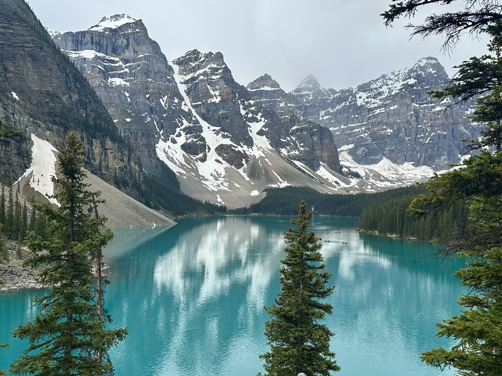
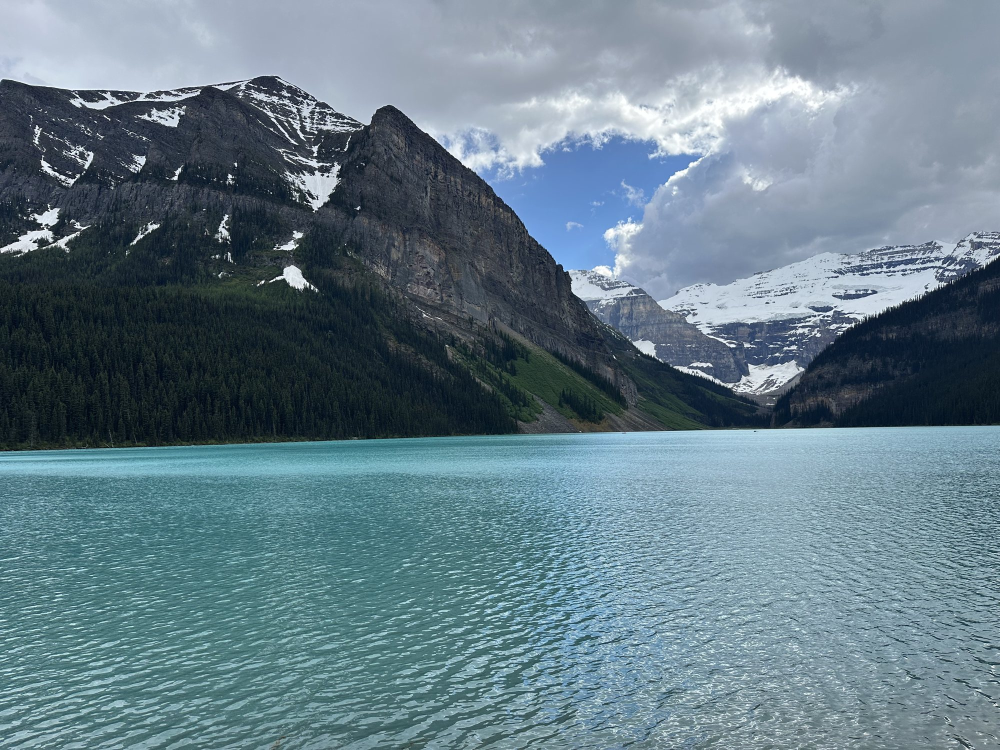

June 24 – 28, 2026 · Canadian Rockies
Five days. Eleven trails. Two national parks.
The bluest water either of us has ever seen.
The Trip at a Glance
Every GPS track we recorded — click a trail to jump to its day.

Until next time